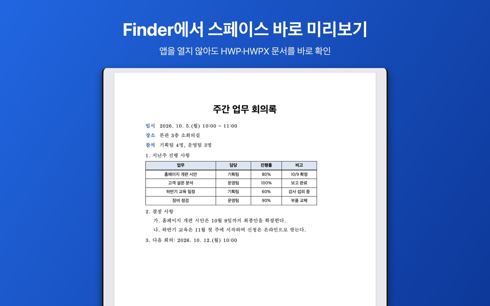
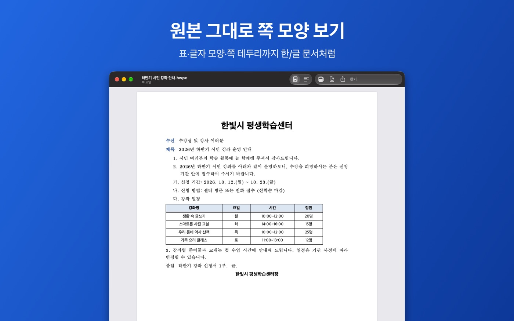

아이패드·맥에서 한글 파일 열기
앱 하나로 iPhone·iPad·Mac
HWP 뷰어는 같은 App Store 항목에서 iPhone·iPad·Mac용을 받을 수 있습니다. 문서 보기는 무료이고, 평생 이용권은 같은 Apple 계정이면 모든 기기에서 함께 쓸 수 있습니다(다른 기기에서는 ‘구입 복원’).
필요한 버전: iPadOS 18·macOS 15 이상(보기), PDF·사진을 한글 파일로 바꾸는 기능은 iPadOS 26·macOS 26 이상.
iPad에서
- 메일·메신저 첨부는 공유 버튼 → ‘HWP 뷰어’, 파일 앱의 문서는 앱의 ‘둘러보기’에서 엽니다.
- 설치 뒤에는 파일 앱에서 한글 문서를 누르기만 해도 미리보기로 내용이 보입니다.
- ‘더 보기’(…) 메뉴에서 찾기, 화면에 맞춰 보기, PDF로 저장·공유, 쪽 이미지로 공유, 소리로 듣기를 쓸 수 있습니다.
- iPhone과 마찬가지로 양식 채우기·서명, PDF·사진을 한글 파일로 변환도 됩니다.
Mac에서
열기
HWP 뷰어를 열고 ‘파일 › 열기…’에서 .hwp, .hwpx 문서를 고릅니다. Finder에서는 문서를 고르고 스페이스 바를 누르면 앱을 열지 않고 Quick Look 미리보기로 내용을 볼 수 있습니다.

보기·찾기
- 도구 막대에서 ‘쪽 모양’과 ‘화면에 맞춤’(창 폭에 맞춰 다시 배치)을 바꿀 수 있습니다.
- ⌘F로 문서 안을 찾고, Return으로 다음 결과로 이동합니다.
- ⌘+ / ⌘- 로 확대·축소, ⌘0으로 실제 크기로 돌아갑니다.

PDF·인쇄·공유
도구 막대의 ‘PDF로 내보내기’로 PDF 파일을 만들고, ‘프린트’로 인쇄합니다. ‘원본 파일 공유’로 문서를 그대로 보낼 수도 있습니다.
PDF·사진을 한글 파일로 (macOS 26 이상)
‘파일 › PDF·사진을 한글 파일로 변환…’(⇧⌘O) 창에 PDF나 이미지 파일을 끌어다 놓으면 HWPX 파일이 다운로드 폴더에 저장되고 ‘뷰어에서 열기’로 바로 볼 수 있습니다. 3번까지 무료이고 이후에는 평생 이용권이 필요합니다.
Mac 버전에 아직 없는 것
현재 Mac 버전에는 양식 채우기·서명, 워드·엑셀·PDF 보기 기능이 아직 없습니다. 이 기능은 iPhone·iPad에서 쓸 수 있습니다.
HWP와 HWPX는 뭐가 다른가요?
둘 다 한/글 문서 형식입니다. HWP는 예전부터 쓰던 형식이고, HWPX는 비교적 새 버전의 한/글이 저장하는 형식입니다. HWP 뷰어는 두 형식과 공공기관의 배포용 문서를 모두 열 수 있습니다. 암호가 걸린 문서는 열 수 없습니다.